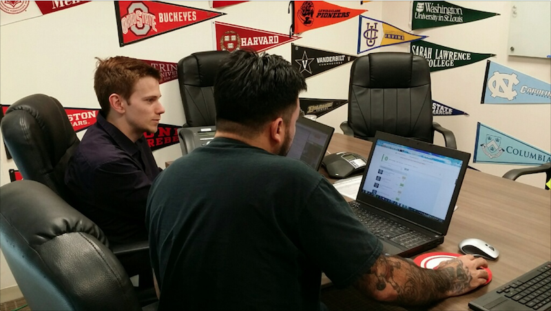
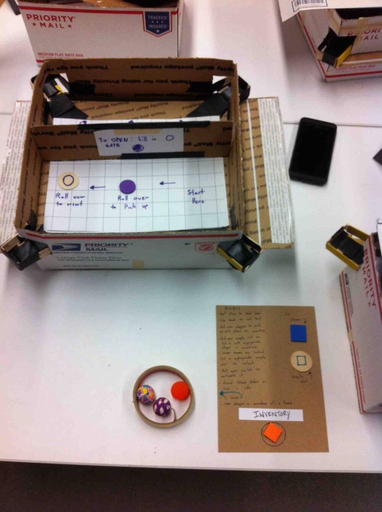
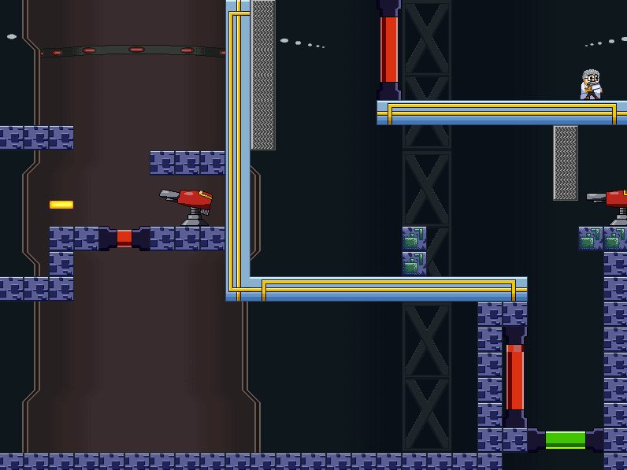
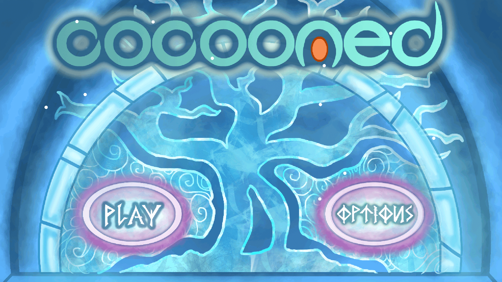
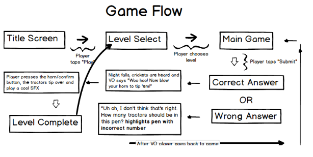
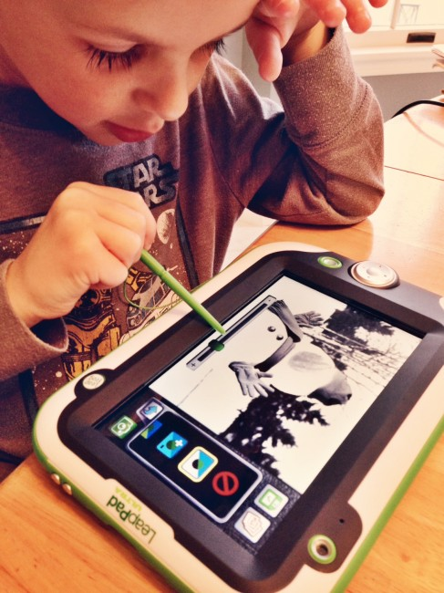
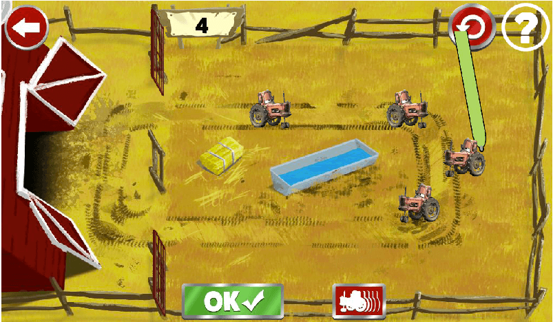
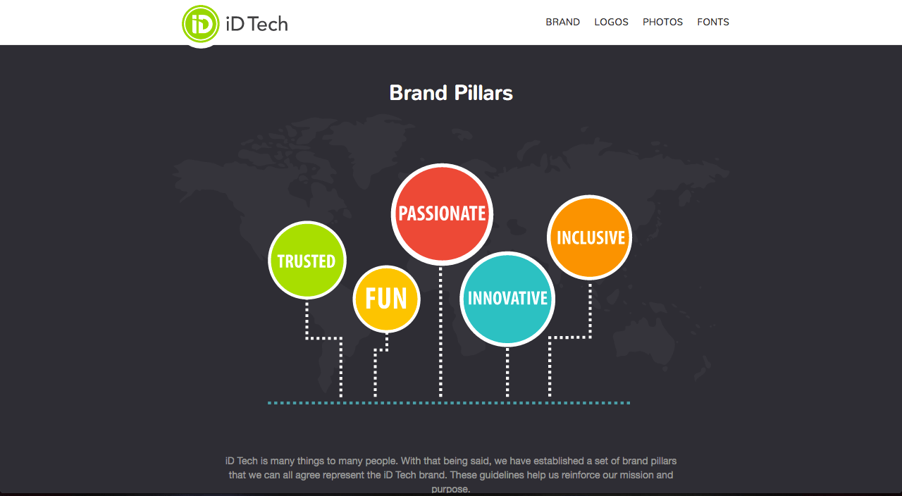
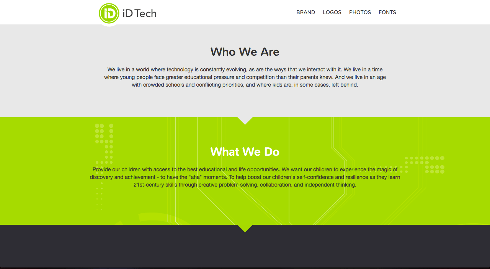
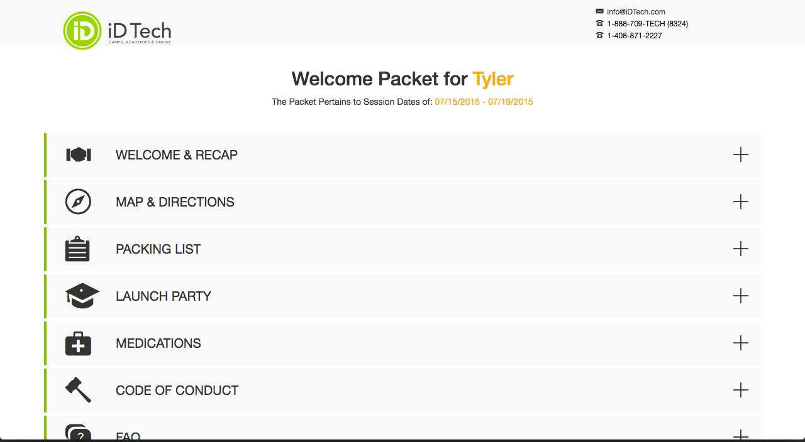

Hi!
My name is John, but most people call me Bentley.
I am a web designer and developer with a passion for building great digital experiences.
Thanks for checking out some of my work!


My journey began with game development
University of California, Santa Cruz | 2010-2014


At LeapFrog, I developed my passion for user testing and interaction design
Game Design Intern | LeapFrog | 2014




While at LeapFrog, I worked in a team of 4 to develop a prototype math game for 4-7 year olds. I partictipated in daily stand ups, created a game design document, wireframed levels, and conducted user tests with kids.
“I worked closely with John during his internship at Leapfrog.
He quickly became a highly productive member of our
design team, taking on the wide array of tasks we handed
him on a daily basis with creativity and enthusiasm. His work
was thorough, he took feedback well, and he was a
pleasure to work with.”
- Sandy Spanger Senior Game Designer at Anki, Inc.
My first dive into professional web design was at iD Tech
Front End Developer | iD Tech | 2014 - 2016




In addition to converting designs into code, I worked closely with fellow designers to wireframe, user test, and implemented new products.
“He is able to take ideas and merge them with solid web
designing skills to provide creative solutions to problems
we faced within the company.”
- Olga Kuczer Senior Product UI / UX Designer, IBM
My own personal projects help me define what to focus on next.